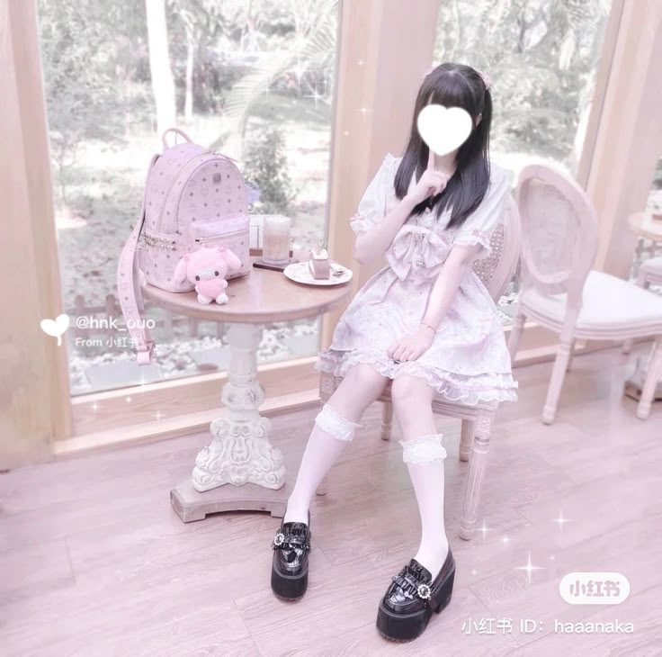
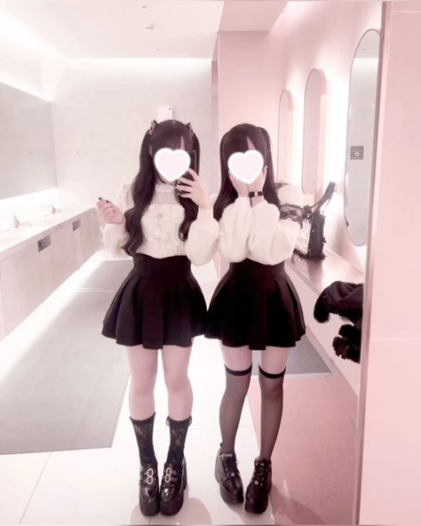
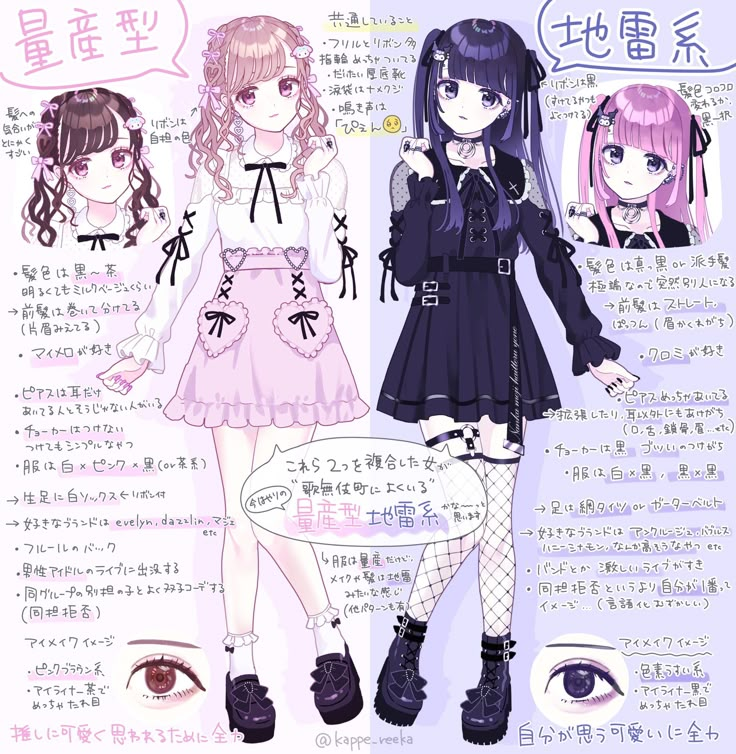

Джирай Кей - это молодежная модная субкультура, зародившаяся в японском районе Кабукичо и впервые набравшая популярность в начале 2020-х годов. Ее первоначальный стиль состоял из темной девчачьей одежды, но в нем была своя изюминка, из-за которой ее обладательница даже с первого взгляда выглядела как Джирай.
Однако с ростом популярности субкультуры ее стиль претерпел многочисленные изменения, и в настоящее время используется более широкий спектр модной одежды.
Сомнительное название и связанная с ним негативная деятельность сделали его существование спорным, особенно в Японии.
 Дзирай (地雷) - распространенный японский жаргонный термин, используемый для описания чего-либо как "опасного", поскольку это сродни наступлению на наземную мину. До ассоциации с трендами слово "Джирай Кей" (地雷系) в основном использовалось в уничижительной манере, чтобы обозначить женщину как психически неуравновешенную, склонную к сильным эмоциональным срывам, часто по отношению к своим партнерам.
Поскольку слово "наземная мина" почти всегда используется в негативном контексте по отношению к человеку, а также для оскорбления или унижения достоинства, вокруг этого названия возникли разногласия.
Несмотря на то, что этот термин получил некоторое распространение в японских СМИ, он по-прежнему считается уничижительным до такой степени, что сотрудники различных компаний отказываются работать над чем-либо, связанным с этим термином или тенденцией.
Женщин в субкультуре называют "Джирай Джоши" (地雷女子), или девушки-мины, в то время как мужчин в субкультуре называют "Джирай Данши" (地雷男子), или мальчики-мины.
С момента первоначального бума в 2020 году бренд Jirai Kei расширился во многих направлениях и теперь охватывает широкий спектр стилей. Классический наряд Jirai Kei выполнен в девчачьем стиле и подчеркивает женственную и в то же время таинственную ауру, делая акцент на сочетании черного с приглушенным розовым, но иногда также красного или белого.